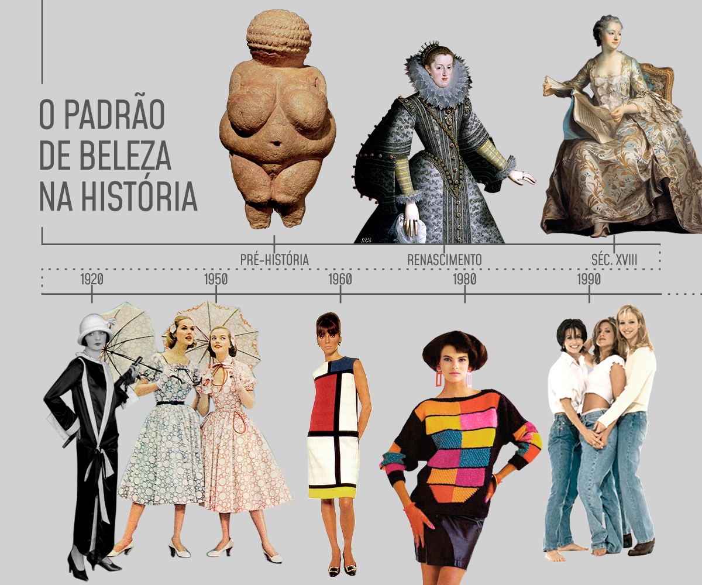

Moda é o substantivo feminino que significa uma maneira ou costume mais predominante em um determinado grupo em um determinado momento. É uma palavra muito usada para designar uma forma de se vestir que é comum para muitos ou apreciada por muitas pessoas.A moda pode-se definir como sendo um mecanismo que regula as escolhas e as preferências das pessoas, já que, devido a uma espécie de pressão social, indica-lhes aquilo que devem consumir, utilizar, usar ou fazer. A moda torna-se um hábito repetitivo que identifica um sujeito ou um grupo de indivíduos.Além do que já estamos acostumados a acompanhar na mídia, a moda diz muito mais a respeito do nosso comportamento e posicionamento do que imaginamos. Resumindo: ela representa uma forma de vestir, se comunicar, transmitir atitude e, até mesmo, de contar ao mundo um pouquinho de quem somos
A beleza pode ser reconfortante, perturbadora, sagrada e profana; pode revigorar, encantar, inspirar, atemorizar. Ela pode nos influenciar de inúmeras formas. Não obstante, jamais é vista com indiferença: exige nossa atenção, fala-nos diretamente, como a voz de um amigo íntimo. A tendência atual é ter um corpo extremamente esculpido, seco, sem excesso de curvas, levemente malhado, porém considerado “lindo e saudável” segundo a maioria das pessoas. Essas mensagens estão sendo divulgadas em todos os lugares como o padrão de beleza ideal. Quando falamos sobre o assunto, fica a pergunta: o padrão de beleza é sempre igual? O padrão tem mudado ao longo do tempo. A mudança atual está associada ao que é sucesso na televisão e nas redes sociais, acompanhando sempre as pessoas que estão em maior evidência.
